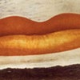
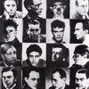
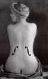

Man Ray che aveva lavorato intensamente nei campi della fotografia, della progettazione di oggetti, in un clima di ricerche prettamente dadaista si accosta al cinema intorno agli anni Venti. Il primo film di Ray "Retour à la raison", presentato nel 1923 durante la famosa serata dadaista "Coeur à barbe", fu realizzato praticamente in una sola notte con diversi materiali cinematografici, in parte già pronti.
Si può considerare come, almeno nella tradizione che prima ancora di tramandarci la copia ce ne ha tramandato la mitologia, un film confezionato "all'improvviso", una sorta di collage nato in laboratorio di montaggio. Esso dura pochi minuti ed è costruito al di fuori di ogni struttura formale e contenutistica, pochè vuole essere assolutamente provocatorio, come anche il titolo dimostra: infatti era tutto fuorchè razionale o razionalmente determinato.
Gli strappi reali della pellicola che si sono verificati nel corso della tumultuosa proiezione (anche questo fa parte della mitologia oramai inseparabile dal testo visivo) sono omologhi degli strappi metaforici del tessuto discorsivo e narrativo che il film realizzava. Le porzioni di pellicola impressionata senza ricorrere alla cinepresa, ma per semplice "contatto" di oggetti comuni (spilli, puntine da disegno, pepe e sale) sono altrettanti "strappi" alla scena illusoria in profondità prospettica della "storia" inscenata dal cinema narrativo (che eredita la scena prospettica della pittura e del teatro): un calcolato effetto di shock ci riporta alla superficie dello schermo, della pellicola, dell'emulsione.
Da questo punto di vista, il piccolo film di Man Ray realizza con la pellicola qualcosa di simile all'assemblaggio di ready made della "pittura" dada. D'altra parte, l'intrecciarsi degli elementi più sfrenatamente casuali con altri di raffinatezza fotografica molto ricercata (i sottili arabeschi dell'ombra di una tenda sul corpo nudo della modella, nella parte finale) ci portano dentro il procedimento tipico dell'arte di Man Ray, basato su un dosaggio di "caso" e "necessità", improvvisazione e rigore formale.
|  |  |  |
Per quanto riguarda il cinema l'azione provocatoria di Man Ray era ancora più significativa perchè si inseriva in una situazione di interessi estetici concernenti il cinema come arte, che proprio negli anni Venti raggiunsero i risultati teorici più notevoli. In altre parole, "Retour à la raison" distruggeva con la sua antistruttura e la sua assoluta casualità, ogni tentativo di incasellare il cinema nelle categorie dell'arte e delimitare il suo campo d'azione sulla base di quegli "specifici" (come il montaggio, il primo piano, ecc.) che si andavano teorizzando e sperimentando da più parti.
In questa direzione Man Ray si mosse anche negli anni seguenti realizzando altri tre film - "Emak Bakia" (1926), "L'étoile de mer" (1929), "Le mistyère de chateau de dès "(1929) - che portano avanti le ricerche espressive nel campo del cinema, trasferendo nelle immagini semoventi le invenzioni formali, gli esperimenti, le ricerche condotte in altri campi delle arti visive.
E' interessante tuttavia osservare che la novità di queste opere, proprio per un discorso sulla nuova visualità e sull'uso che i pittori fecero del cinema in quegli anni, non va tanto cercata nelle tecniche impiegate e nelle soluzioni artistiche proposte, quanto invece nel rifiuto di una struttura formale, nella continua provocazione del gusto corrente nella rinuncia di ogni razionalità compositiva.